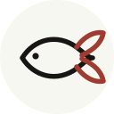
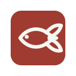
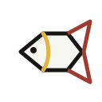
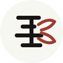
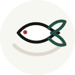
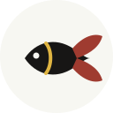
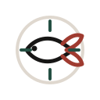
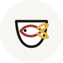
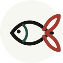
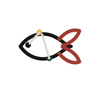

01 细线游鱼
最接近现在网站的克制气质。风险是记忆点没那么强。
金鱼
GOLDFISH MARK OPTIONS
这些都按网站导航栏的小尺寸来做。不是插画，也不是可爱头像，而是可以长期挂在个人网站上的小标识。

最接近现在网站的克制气质。风险是记忆点没那么强。

像个人印章，最有“个人 IP”感。适合你想更有辨识度。

更偏产品、工具和结构感。适合强调你会拆问题。

把“金”做进符号里，小尺寸识别强，但会更像中文印记。

多一点“路径”和“梳理”的意味，比 01 更有动作感。

最有人味，像一个手写出来的标。风险是比网站现在更文艺。

适合“帮项目找方向”的定位，但概念感会稍重。

和“金鱼”昵称最直接。风险是有一点生活方式品牌感。

更柔和，更适合个人品牌；比 01 更有“游动”的感觉。

偏 AI 和信息整理，和工具属性最贴；风险是没那么温暖。